Las 10 mejores botas de trekking de 2026 — análisis tras 500 km
14 modelos probados en barro, roca y nieve. Solo 10 superaron la prueba real.
Análisis honestos, comparativas reales y el mejor equipamiento probado sobre el terreno. Tu guía de confianza antes de cada salida a la montaña.
Análisis editoriales escritos tras prueba real en ruta
 Guía de compra
Guía de compra14 modelos probados en barro, roca y nieve. Solo 10 superaron la prueba real.
 Comparativa
ComparativaFrente a frente en peso, ventilación y durabilidad tras 200 km de ruta.
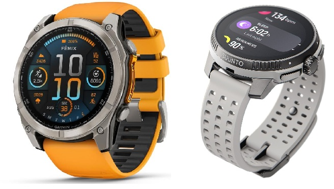
Comparativa GPSBatería, mapas y precisión. Cuál gana en cada situación real de montaña.
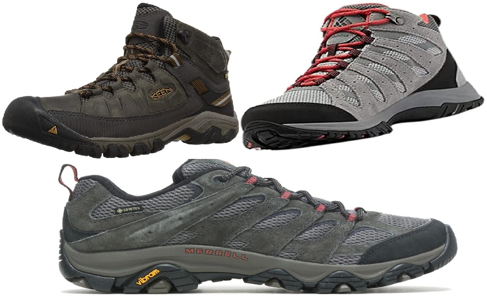
Long tailSin gastar de más: los 4 modelos que mejor rendimiento ofrecen a precio asequible.
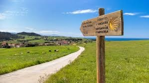
Long tailLista completa de equipo para el Camino Francés con enlaces de compra directa.
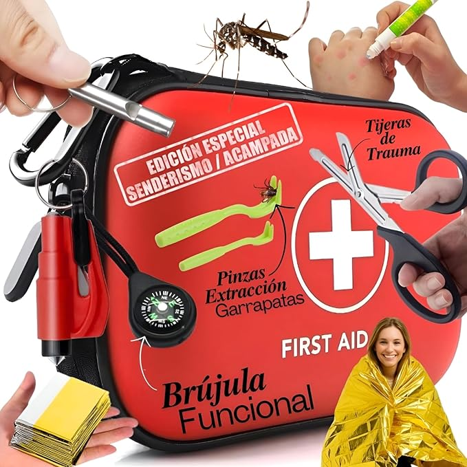
Guía de seguridadLo mínimo imprescindible para salir a la montaña con garantías. Con lista de compra.
 Guía
GuíaAltura, membrana, suela y horma: los 4 factores que nadie te explica en la tienda.
 Guía esencial
Guía esencialLa lista definitiva que usamos nosotros en cada salida. Nada sobra, nada falta.
Selección actualizada · Precios verificados en Amazon · Mayo 2025
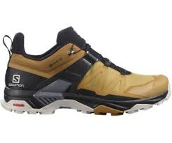
Elección editor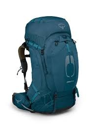
Más vendido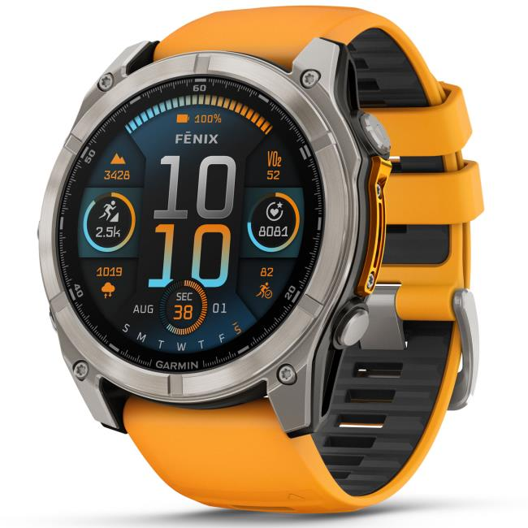
Premium -30%
-30%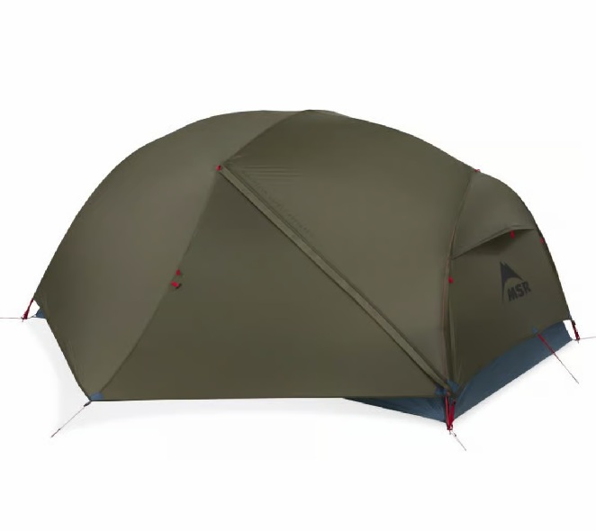
Ultraligera Top ventas
Top ventasFichas técnicas con equipamiento recomendado para cada ruta
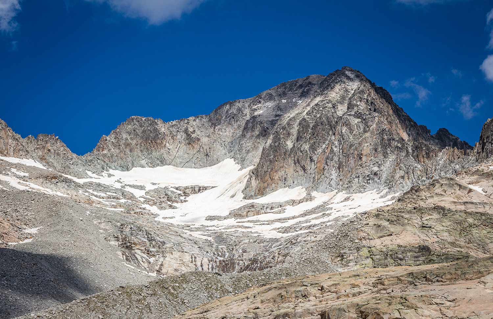
Media-Alta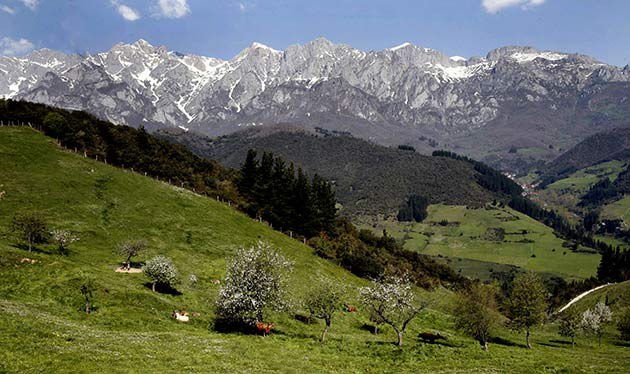
Fácil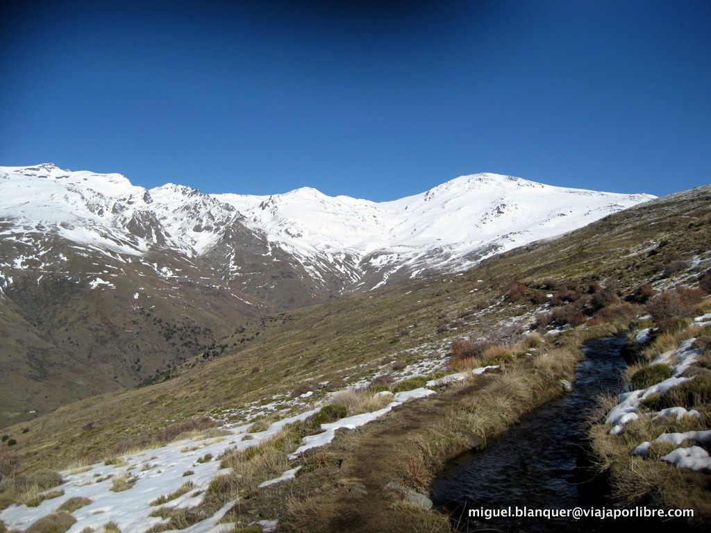
Difícil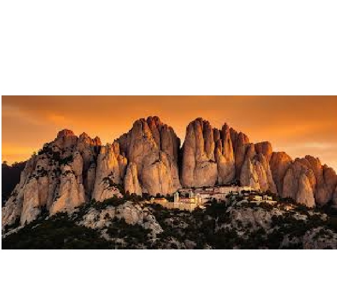
Fácil Media
Media
Si buscas las mejores botas de trekking de 2026, estás en el lugar correcto. He probado 14 modelos durante ocho meses en terrenos muy distintos. Solo cinco merecen tu dinero.
| Modelo | Precio | Peso | Membrana | Nota | Perfil |
|---|---|---|---|---|---|
| Salomon X Ultra pioneer GTX | 110€ | 310g | Gore-Tex | 9.4 | Todo terreno |
| Scarpa Zodiac Plus GTX | 280€ | 340g | Gore-Tex | 9.7 | Alta montaña |
| Merrell Moab 3 GTX | 90€ | 395g | Gore-Tex | 8.1 | Principiantes |
| La Sportiva TX5 GTX | 187€ | 290g | Gore-Tex | 9.1 | Roca y trail |
| Lowa Renegade GTX Mid | 218€ | 380g | Gore-Tex | 9.0 | Pie ancho |
El Quicklace permite ajuste preciso en segundos. La suela Contagrip TD ofrece agarre sobresaliente en barro y roca mojada. Cómoda desde el primer uso, sin periodo de adaptación.
Tipo de terreno: para barro y lluvia, necesitas Gore-Tex y taco profundo. Para roca seca en verano, una bota más ligera puede ser más eficiente.
Altura: baja para agilidad, media para equilibrio, alta para carga pesada o tobillo débil.
Talla: pide siempre media talla más de la habitual.
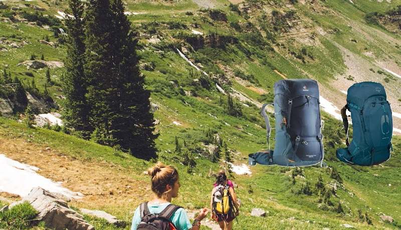
Las dos mochilas más vendidas del mercado en la franja 60-70L. Ambas rondan los 250-300€. He llevado las dos durante más de 200 km para darte una respuesta clara.
| Característica | Osprey Atmos AG 65 | Deuter Aircontact 65+10 |
|---|---|---|
| Peso | 1.99 kg | 1.89 kg ✓ |
| Ventilación dorsal | Excepcional ✓ | Muy buena |
| Organización | 8 bolsillos | 10 bolsillos ✓ |
| Funda lluvia | Incluida ✓ | Incluida ✓ |
| Garantía | De por vida ✓ | 3 años |
| Precio | 280€ | 260€ ✓ |
Dos relojes GPS de alta gama que superan los 300€. He llevado los dos simultáneamente durante tres meses. Esta es la comparativa más honesta que encontrarás.
| Característica | Garmin Fenix 8 Solar | Suunto Race |
|---|---|---|
| Batería GPS activo | 86–122h (solar) ✓ | 40h |
| Mapas topográficos | TopoActive Europa ✓ | Offline incluidos |
| Giróscopo | Sí ✓ | No |
| Peso | 89g | 74g ✓ |
| Apps de terceros | Connect IQ ✓ | No |
| Precio | 725,64€ | 349€ ✓ |
Empezar en el senderismo no significa gastar 250€ en botas o zapatillas. Estos tres modelos por debajo de 150€ ofrecen prestaciones más que suficientes para el 90% de las rutas de iniciación: senderos bien marcados, terreno mixto y rutas de un día hasta una dificultad moderada
Las Merrell Moab 3 GTX son, sin exagerar, las "reinas" del senderismo para principiantes (y no tan principiantes). Si estás empezando a salir a la montaña, es muy probable que sea el primer modelo que te recomienden en cualquier tienda. Por un precio que no supera los 100€ según modelo en Amazon. No necesitas nada más para empezar.
El calce es amplio, lo que la hace ideal para personas que están empezando y no saben exactamente qué tipo de pie tienen. La suela Vibram TC5+ ofrece un agarre suficiente para senderos de tierra y roca moderada. No es la bota más ligera ni la más técnica del mercado, pero para el senderista que está comenzando es exactamente lo que necesita.
Si llevas más de dos temporadas haciendo senderismo regularmente, si haces rutas de varios días o si te interesa la alta montaña, entonces sí tiene sentido invertir en un modelo de gama media-alta como la Salomon X Ultra 4 GTX (139€) o la La Sportiva TX5 GTX (185€). Pero para empezar, la Merrell es más que suficiente.
Para empezar en el senderismo sin gastar más de 100€, la Merrell Moab 3 GTX es la opción más inteligente del mercado. Cómoda, impermeable y duradera. 💡 Un consejo de oro para comprarlas: Merrell suele calzar un pelín justo. Cuando te las pruebes (siempre con el calcetín de montaña que vayas a usar), asegúrate de que te sobra más o menos el ancho de un dedo de espacio entre tus dedos y la puntera. Así, cuando bajes una cuesta, los dedos no chocarán contra la parte delantera.
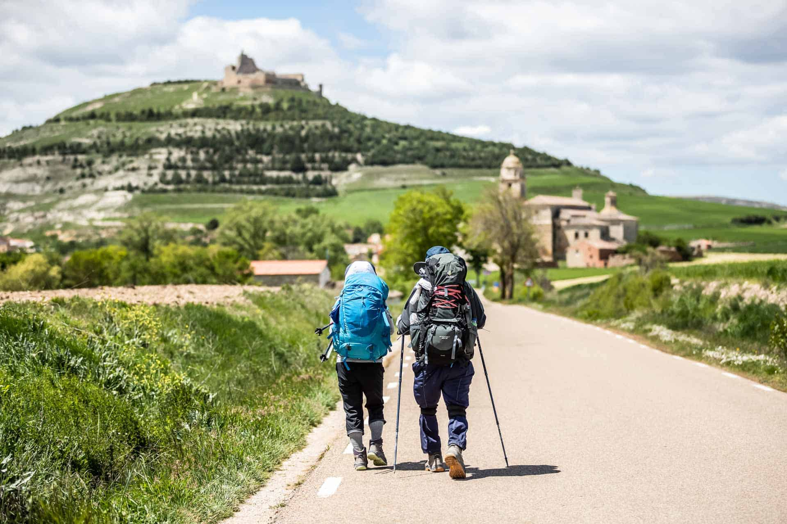
El Camino de Santiago es la ruta de senderismo más popular del mundo. Cada año, más de 400.000 personas completan alguna de sus variantes. La mayoría llegan bien de ilusión pero mal equipados. Esta guía te evita ese error.
La regla de oro del Camino es que la mochila no debe superar el 10% de tu peso corporal. Para una persona de 70 kg, eso son 7 kg máximo. Con una mochila de entre 30 y 40 litros tienes espacio suficiente para todo lo necesario sin cargar de más.
El error número uno de los peregrinos es estrenar las botas en el Camino. Las botas necesitan un mínimo de 4-6 salidas previas para adaptarse a tu pie. Si llegas al Camino con botas nuevas, las ampollas están garantizadas en los primeros kilómetros.
Para el Camino Francés (el más popular), con terreno variado —asfalto, camino de tierra, pequeñas piedras— una bota de media caña con Gore-Tex es la opción más versátil. Algunos peregrinos experimentados prefieren zapatillas de trail running para mayor ligereza, pero sacrifican protección del tobillo.
El secreto de un Camino feliz es simple: mochila ligera, botas rodadas y calcetines de calidad. Con estos tres elementos resueltos, el resto es solo disfrutar del camino.
Salir a la montaña sin botiquín es un error que muchos senderistas cometen hasta que lo necesitan. No hace falta llevar una clínica entera en la mochila: con los elementos adecuados puedes gestionar el 95% de las emergencias menores que ocurren en ruta.
Un botiquín bien pensado para rutas de un día no debería superar los 250-300 gramos. Para rutas de varios días con pernoctación, puedes añadir vendas adicionales y algún medicamento más, pero sin superar los 400g. Un botiquín pesado es un botiquín que acabas dejando en casa.

Elegir unas botas de montaña mal puede convertir la mejor ruta del año en una pesadilla de ampollas y dolor. Esta guía te explica los cuatro factores que realmente importan, sin tecnicismos innecesarios.
Baja (low): más ligera y ágil, pero sin sujeción del tobillo. Ideal para trail running o senderismo muy rápido sin carga. No recomendada si cargas más de 8-10 kg o tienes el tobillo débil.
Media (mid): el equilibrio perfecto para la mayoría de senderistas. Suficiente sujeción del tobillo sin sacrificar demasiado peso ni movilidad. Es la altura que recomendamos para el 80% de los casos.
Alta (high): máxima sujeción, imprescindible con cargas pesadas (mochila de 15+ kg) o en terreno técnico con crampones. Más pesada y con mayor periodo de adaptación.
Gore-Tex: el estándar de referencia. Impermeable y transpirable. Dura más que las membranas propietarias en uso intensivo. Vale los 20-40€ de diferencia de precio si haces rutas regularmente.
Membranas propietarias (Merrell Dry, Salomon Climasalomon): más económicas, funcionan bien para uso ocasional pero tienden a saturarse antes con el tiempo.
Sin membrana: para verano en clima seco o trail running. Más transpirable pero sin protección ante lluvia o agua.
Vibram: la referencia en agarre. La mayoría de botas premium la incluyen. Identifícala por el hexágono amarillo en la suela.
Suelas propietarias (Contagrip de Salomon, XT-6 de La Sportiva): muy competitivas, especialmente en sus respectivos terrenos de diseño.
Un taco más profundo y separado agarra mejor en barro. Un taco más fino y apretado es más cómodo en roca y asfalto.
Ningún factor importa más que el encaje de la bota en tu pie. Las hormas varían significativamente entre marcas. Salomon tiene horma estrecha; Lowa y Keen, amplia; Merrell, media-ancha. Pruébate siempre con los calcetines con los que vas a senderear.
| Marca | Horma | Mejor para | Precio medio |
|---|---|---|---|
| Salomon | Estrecha | Pies estrechos y altos | 130–200€ |
| Lowa | Ancha | Pies anchos y planos | 160–220€ |
| Merrell | Media-ancha | Uso general, principiantes | 80–150€ |
| Keen | Muy ancha | Dedos anchos, pies planos | 100–180€ |
| Scarpa | Media | Alta montaña técnica | 180–280€ |
Altura según tu uso, Gore-Tex si haces rutas regularmente, Vibram si priorizas agarre, y pruébate siempre con tus calcetines técnicos al final del día. Con estos cuatro criterios claros, no puedes equivocarte.

Esta es la lista que uso en cada salida de un día en una zona como pirineos. Nada sobra. Nada falta. Está optimizada para rutas de 12-20 km en montaña con desniveles de hasta 900-1.200 metros.
La linterna frontal: aunque salgas con sol, un retraso puede pillarte de noche. Una linterna pequeña pesa 80g y ocupa lo mismo que un mechero.
El chubasquero: en montaña el tiempo cambia en minutos. Un chubasquero ultraligero cabe en el bolsillo lateral de cualquier mochila y puede convertir una situación desagradable en una anécdota.
La batería externa: si usas el móvil como GPS (Wikiloc, Komoot), la batería se agota mucho más rápido de lo habitual. Lleva siempre una batería de al menos 10.000mAh.
Si dudas si llevar algo, llévalo. El peso de la seguridad siempre vale más que el peso ahorrado. Una mochila bien equipada de un día no debería superar los 6-8 kg.
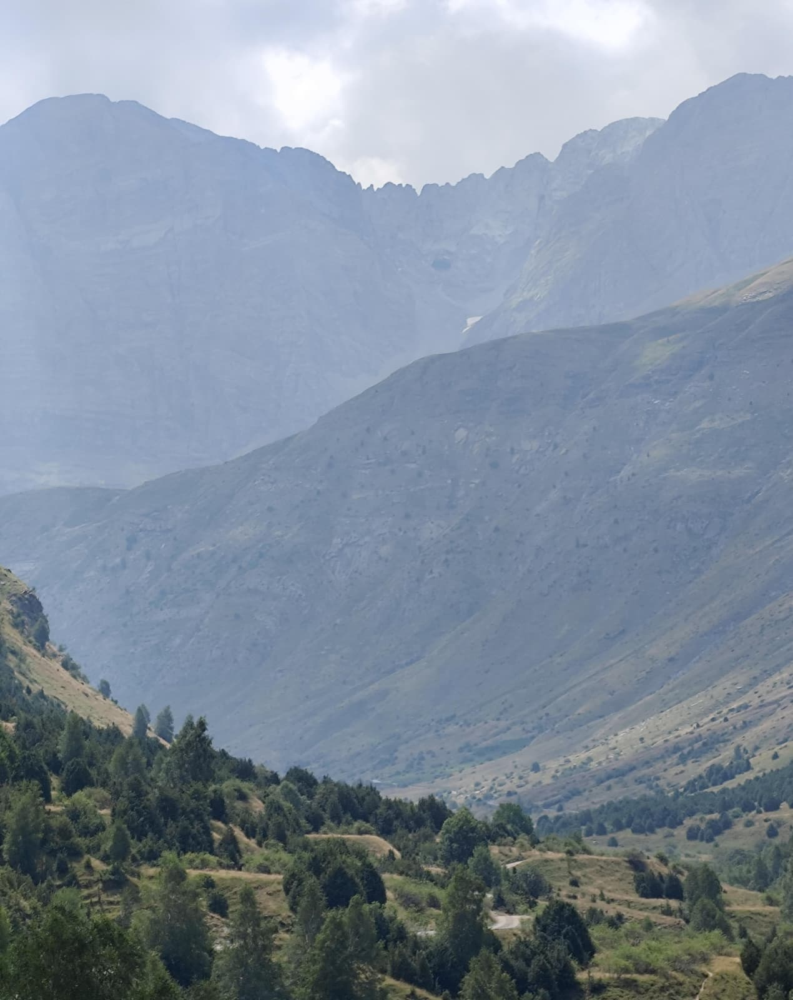
CumbreGear nació en 2020 de una frustración concreta: la mayoría de webs de equipamiento estaban escritas por personas que jamás habían pisado una ruta real con el producto en los pies.
Somos Daniel Pol y Elena, senderista de Castellón de la plana con más de quince años recorriendo montañas. Daniel es guía de alta montaña y forma parte de un grupo senderista experimentado. Elena es fisioterapeuta especializada en biomecánica deportiva. Juntos acumulamos más de 40.000 km de rutas y cientos de productos probados sobre el terreno.
CumbreGear participa en el Programa de Afiliados de Amazon. Cuando compras a través de nuestros enlaces, Amazon nos paga una pequeña comisión sin coste adicional para ti. Esta comisión no influye en nuestras recomendaciones. Recomendamos lo que recomendaríamos a un amigo.
Contacto: Kartoonberg@hotmail.com
Cada análisis que publicamos tiene como único objetivo ayudarte a tomar la mejor decisión de compra posible.
CumbreGear · privacidad@cumbregear.com · Zaragoza, España
Correo electrónico (newsletter y contacto), datos de navegación anónimos (Google Analytics) y cookies técnicas.
Envío de newsletter (con tu consentimiento expreso), análisis estadístico anónimo y respuesta a consultas.
Participamos en el Programa de Afiliados de Amazon EU. Amazon puede recopilar datos cuando haces clic en nuestros enlaces. Consulta la Política de Privacidad de Amazon.
Acceso, rectificación, supresión, limitación, portabilidad y oposición. Escribe a privacidad@cumbregear.com. Puedes reclamar ante la AEPD.
Los datos de suscriptores se eliminan en 30 días tras la baja. Los de contacto, el tiempo legalmente exigible.
Cookies propias técnicas (imprescindibles) y Google Analytics (análisis anónimo). Puedes desactivarlas en tu navegador.
privacidad@cumbregear.com · Zaragoza, España
Todos los contenidos de cumbregear.com son propiedad de CumbreGear y están protegidos por la Ley de Propiedad Intelectual. Se permite la reproducción parcial citando la fuente con enlace activo.
Los precios son orientativos y pueden variar. Las recomendaciones de equipamiento son editoriales, no sustituyen el asesoramiento de un guía profesional. La práctica del senderismo y alpinismo conlleva riesgos inherentes. CumbreGear no se hace responsable de accidentes derivados del uso del equipamiento recomendado.
CumbreGear es participante en el Programa de Afiliados de Amazon EU. Obtenemos comisiones por compras realizadas a través de nuestros enlaces, sin coste adicional para el comprador.
LSSI-CE, RGPD, LOPDGDD, LPI. Jurisdicción: Juzgados de Zaragoza.
legal@cumbregear.com · Plataforma ODR UE
En CumbreGear creemos que la transparencia es la base de la confianza.
Un enlace de afiliado lleva a Amazon con un identificador único de CumbreGear. Si compras a través de él, Amazon nos paga una comisión. Para ti el precio es exactamente el mismo.
No. Recomendamos lo que recomendaríamos a un amigo, con independencia de la comisión que genere. En muchos artículos recomendamos el producto más barato porque es genuinamente el mejor para ese uso.
Cada clic en nuestros enlaces nos permite seguir publicando análisis honestos y mantener la web libre de publicidad intrusiva.

El Pico Aneto es la montaña más alta del Pirineo. Su ascensión no es técnicamente difícil, pero requiere preparación física, buen equipamiento y condiciones meteorológicas favorables.
Desde el parking de La Besurta (1.900m), una pista bien marcada asciende entre prados alpinos hasta el Refugio de La Renclusa (2.140m). Tramo cómodo, ideal para calentar.
Ascenso por terreno pedregoso con más pendiente. Pasado el glaciar de Aneto se llega al Collado de Coronas (3.196m). El tramo más exigente en desnivel.
El célebre "Paso de Mahoma": cresta estrecha de 40m con exposición a ambos lados. Sin técnica de escalada, pero requiere no tener vértigo. Cima a 3.404m con vistas espectaculares.
El Aneto es la cumbre más emblemática de España. Exigente pero accesible con preparación y equipo adecuado. Si tienes que elegir una cumbre este verano, que sea esta.

La ruta circular de los Lagos de Covadonga es una de las más populares del norte de España. Paisaje atlántico, prados verdes y las cumbres calcáreas de los Picos. Apta para familias.
Una ruta imprescindible. El paisaje de los Lagos con las cumbres al fondo es de los más fotogénicos de la montaña española.

El Mulhacén es el techo continental de la Península. Desde la cima, en días despejados se ve el Mediterráneo. Una experiencia única que requiere preparación física seria.
El Mulhacén cambia la perspectiva. Ver la Península desde su punto más alto es una experiencia que no se olvida.

Montserrat es única en Europa. Sus agujas de conglomerado erosionado, el monasterio y las vistas sobre Cataluña hacen de esta ruta una experiencia imprescindible.
Única en el mundo. Las formaciones de roca, el monasterio y las vistas hacen de esta ruta una experiencia imprescindible, especialmente para quienes empiezan en el senderismo.

La Faja de Pelay es probablemente una de las diez rutas más espectaculares de España. Una cornisa horizontal sobre las paredes del cañón de Ordesa con vistas directas a las cascadas y al Circo de Soaso.
La Faja de Pelay es, sin exageración, una de las rutas más impresionantes de España. Si solo puedes hacer una ruta en el Pirineo este año, que sea esta.